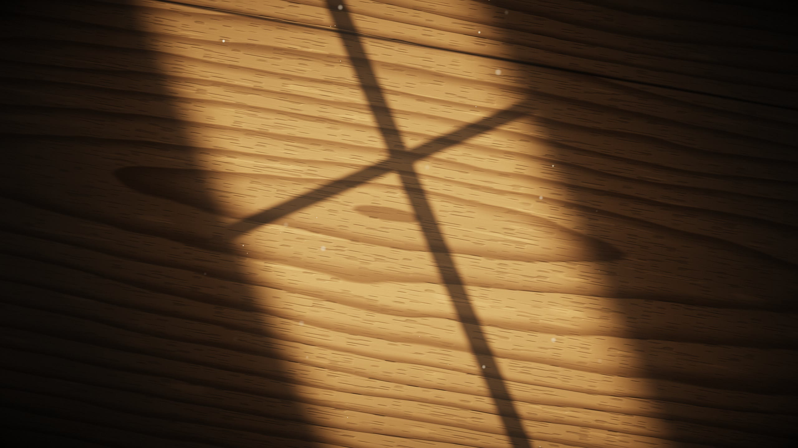
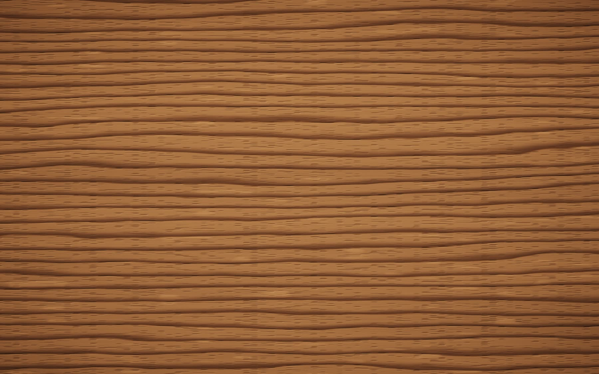

Holz nach Maß.
Tischlerei mit Meisterbrief in Berlin. Wir planen, bauen und montieren Möbel, Treppen und Innenausbau aus massivem Holz.
Projekt anfragen
- Gegründet
- 1987
- Werkstatt
- Musterstraße 99
- Team
- 6 Personen
- Hölzer
- aus der Region
Was wir bauen
Alle LeistungenMöbel nach Maß
Einbauschränke, Küchen, Regalwände und Tische. Geplant für Ihren Raum, gebaut aus Massivholz und ausgesuchten Plattenwerkstoffen.
Eiche · Nuss · EscheInnenausbau
Wandverkleidungen, Akustikpaneele, Ladenbau und Empfangstresen für Wohnungen, Praxen und Gastronomie.
Planung · Fertigung · MontageTreppen
Massivholztreppen, neue Stufenbeläge auf alten Unterkonstruktionen und Geländer, die man gern anfasst.
Wangen- und Faltwerktreppen
Aus der Werkstatt
-

Küchenblock
Pankow / Eiche, geölt / 3200 × 950 × 920 mm / 2025
-

Bibliothekswand
Kreuzberg / Nussbaum massiv / 5400 × 2850 mm / 2025
-

Arbeitstisch
Atelier Wedding / Hirnholzplatte Eiche / 2400 × 900 × 60 mm / 2024
Wir bauen Dinge, die länger halten als ihre Rechnung.
Jedes Stück entsteht in unserer eigenen Werkstatt: vom ersten Aufmaß bis zur letzten Ölschicht. Wir arbeiten mit regionalem Holz, verleimen statt zu schrauben, wo es sinnvoll ist, und kommen zur Montage selbst vorbei.